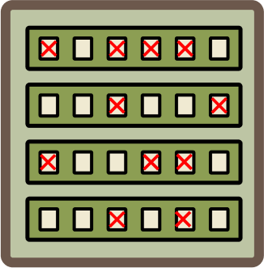

Weet jij je waarde? Doe iets goeds voor de Aarde!
Hieronder krijg je via een versimpelde diagram te zien welke vakken tot nu toe in wel/niet in gebruik zijn. Waar het leeg is, mag je te allen tijde gaan planten; waar een rode kruis staat is het veldje al in gebruik. Wees gul en voorzichtig met wat wij groeien!


HUISREGELS
Bij onze moestuin krijg je te maken met huisregels.
- ALLEEN groentes, fruit en kruiden planten.
- GEEN rommel maken.
- GEEN gebruik maken van alcohol of drugs op de moestuin.